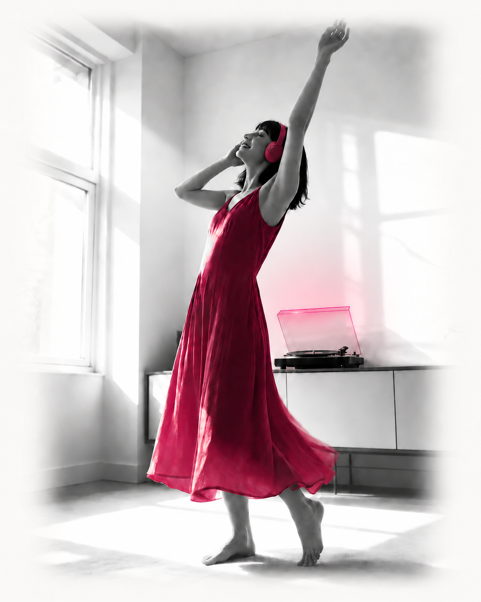

Core
Stay yourself as the moment changes.When other people or the sky shift around you, stay close to the signal that is yours.
20% OffCourtesy of XXXXXXFree 7-Day Trial



“Through Human Design, we begin to understand our unique energetic imprint. But understanding alone isn't transformation. It must be felt.
Zodiac core frequencies translate this unique imprint into sound, bypassing the mind and speaking directly to the body.”
Zodiac's internal 52-week study began with 300 members and 278 completed it. The recommendation, life-changing, and outcome percentages below describe members who used it as designed.
Study results describe participant reports, not guaranteed outcomes. These figures apply to members who averaged at least nine minutes per day and kept each of their four frequencies at 15% or more of total listening.
 Debra SilvermanAstrologer to Sting, Jennifer Aniston, and More
Debra SilvermanAstrologer to Sting, Jennifer Aniston, and More“You're not broken when you're out of resonance.
You're just not operating from your innate frequencies.
This Music Tickled My Soul, Give it a Try, You'll Love it.”
“Zodiac.fm helps people access aspects of themselves that have always been there.
Listening to your frequencies bypasses language and creates profound levels of self-awareness and coherence.
This leads to clearer decisions, more authentic relationships, and expanded possibilities.”
Courtesy of XXXXXX20% OffFree 7-Day Trial
Reveal my frequenciesWhen other people or the sky shift around you, stay close to the signal that is yours.
Stay connected to your own nature while you meet someone else's.
Notice what creates momentum, what drains it, and where your effort belongs.
Move toward the opportunities that fit who you are instead of chasing every door that opens.
 Zehra AsharyEntrepreneur and Wellness Leader
Zehra AsharyEntrepreneur and Wellness Leader“When I heard my frequencies for the first time, something in my chest unlocked.
I started listening every day because quietly everything in my life responded. It lets you finally feel the parts of yourself you have only ever read about.”
“I feel like ME.
I feel like the person I've been trying to get back to for so long without forcing anything. It's just happening so naturally.”
Courtesy of XXXXXX20% OffFree 7-Day Trial
Reveal my frequencies“I prayed for a sign and asked for 10 paid members.
Then I started listening to Zodiac…
Within 45 days, we had almost 40 paid members. It felt like the floodgates of abundance, prosperity, and purpose opened.”
“This has been a total game changer for me.
The abundance-focused music has upleveled my meditation practice and helped me create a powerful energetic shift every day.
I have received multiple unexpected new very lucrative opportunities since I began tuning in.”
 David McEwenTransformation Thought Leader · Over 12 Million YouTube Views
David McEwenTransformation Thought Leader · Over 12 Million YouTube Views“It's like a little cheat code for experiencing your authentic vibration.
Because it's personalized to you, not generic. I use it every day.
During meditation, during visualization, sometimes I'll just sit down and breathe with it for five minutes. And I don't usually plug anything. This one earned it.”
Courtesy of XXXXXX20% OffFree 7-Day Trial
Reveal my frequencies Amy WilcoxZodiac member
Amy WilcoxZodiac member“I am seeing a huge difference in how much more loving I am.
I'm more affectionate, more grounded. It fast-tracked clarity in my relationship. I knew who I was, so I saw him more clearly.”
 Anja ZibertFounder, Rebels Rising
Anja ZibertFounder, Rebels Rising“Zodiac FM blew my mind!
This is the cutting-edge tool I didn't know I needed... now I can't get enough! When I play one, I feel an immediate energy shift.”
Listen during meditation, visualization, walking, cooking, focused work, or for sleep. The product is designed to become part of ordinary life.

“Instead of just studying your blueprint, you begin resonating with it.
If you are serious about embodying your work instead of just analyzing it, this is the missing layer.”
“Zodiac.fm is like a birth note on steroids.”
“Having it on in the background while I work has allowed me to slip into my flow state MUCH easier while having a greater sense of calm and ease.”
“I went from ranting and complaining in my pages to writing in a way that felt hopeful and solutions oriented in only 9 minutes.”
Before you begin
Don’t worry, this is a common question. Your birth time does affect the calculation of your frequencies. However, because Zodiac works like a tuning fork to create resonance and amplify your signal, if it is close enough you will still get an effect, just not as fast or clear as you would if it were exact.
Once you are a member, we will provide ways for you to get your birth time. And if you are not getting effects, we can change your birth time for you once a week until you experience resonance effects. This happens all the time, and 95% of the time we get there.
Choose 12:00 noon if you have no idea. Otherwise, make an educated guess.
You enter your birth details. We calculate four frequencies from 248 celestial data points. We embed those frequencies into music remastered up to 700 times to tune precisely to you.
We begin with Nada Brahma, the old Indian teaching that the universe is sound and that in the beginning there was Om, the same root astrology grew from.
While studying the traditions that turn a birth chart into sound, we found a remote lineage within the Sri Vidya tradition that translates the exact moment of a birth into four frequencies, and we learned the method from them.
To find your four, we take the planetary positions at the minute you were born from an ephemeris (the astronomer’s table of where every planet sits at any moment) and calculate more than 248 data points from them.
Before offering it to anyone, we ran a year-long study with 300 people to make sure what we experienced held up for others too.
Our beta showed listening for a minimum of nine minutes a day produced results. But most people listen for over an hour. Not because they have to. Because the music is good. Really good. And the more you listen, the more profound the results.
These aren’t generic meditation drones. Real composers. Real production. Your frequencies are embedded into each song.
Play it at home. In the car. At the gym. While you work. Build playlists. Loop your favorites. Fall asleep to it. This isn’t a practice you have to remember. It’s music you’ll actually want on.
Good. This isn’t about learning more information. It’s about your system recognizing its pattern from the inside. Knowing your chart cognitively is different from embodying it automatically.
And once you experience the intelligence of your chart from within, you will wonder how you functioned without it.
You don’t need to believe anything. The frequencies are calculated mathematically from your birth moment. Listen and notice what happens.
Yes. Meditation, breathwork, yoga, plant medicine, Qi Gong, prayer, and manifestation are dramatically enhanced by combining your Zodiac frequencies. Practitioners of almost every tradition combine Zodiac for exponential results.
The purpose is stronger access to your own nature, including what you want and which opportunities feel yours. Zodiac does not promise a person, an amount of money or an outcome. Listening accompanies the choices you make.
Yes. Zodiac can accompany meditation, breathwork, journaling or visualization. You can also listen while working or relaxing, through headphones or a decent speaker.
Yes. No contracts, no hassle. Cancel in the app, or email support@zodiac.fm and a real human will help.
You’ll see your four frequencies in exact Hz. Where each one lands in your body. Your frequency distribution type and what it means. Your chart, mapped in a way no one has shown you before.
Reveal the four personal frequencies calculated from your birth moment.
Courtesy of XXXXXX20% OffFree 7-Day Trial
Reveal my frequencies